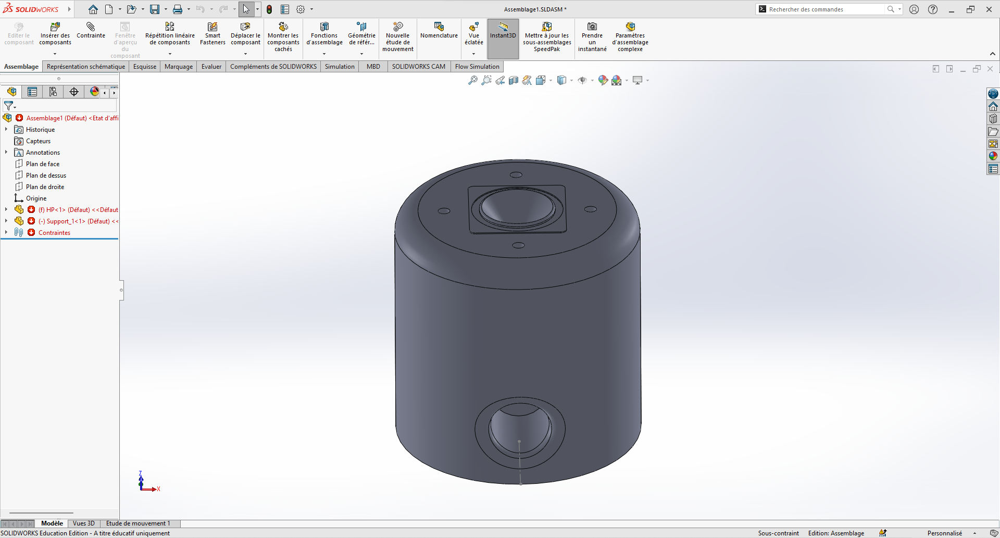
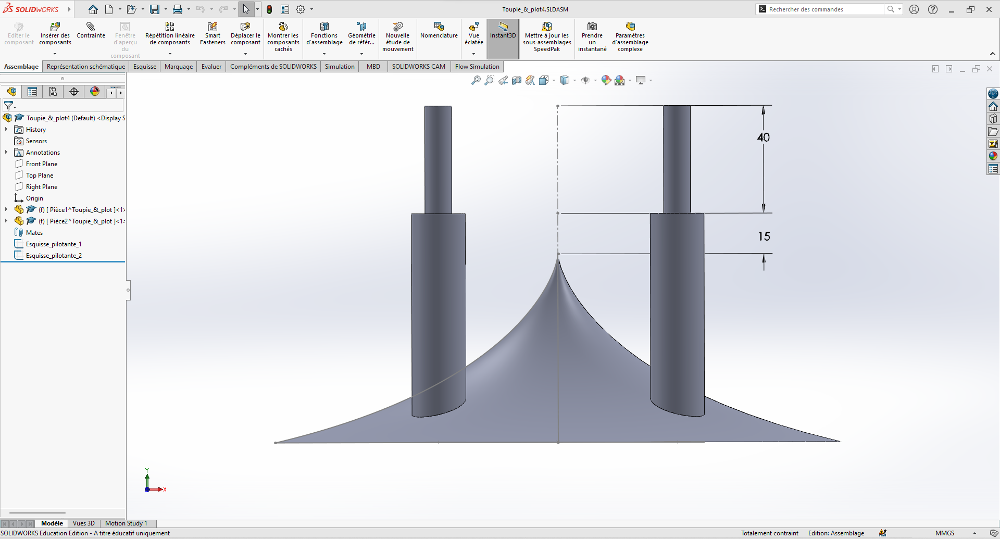
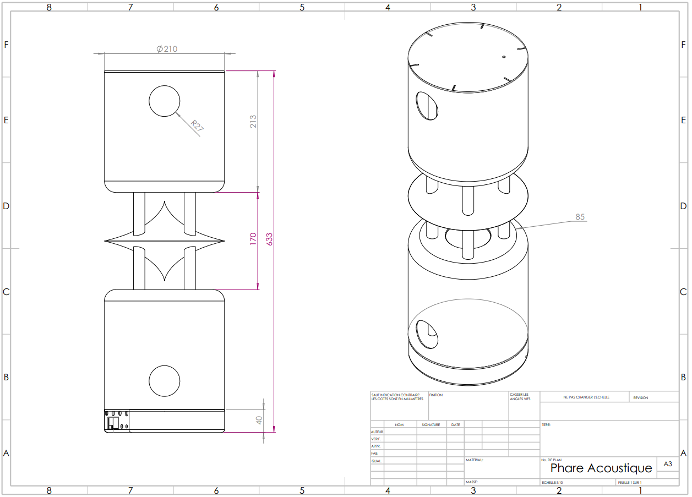

Calculs et dimensionnement Acoustiques
Le volume interne a été dimensionné selon le principe du Bass-Reflex. Les calculs ont été vérifiés via les outils de référence (Dome acoustique) pour accorder l'évent à la fréquence de résonance du haut-parleur.
Le bass reflex a été accordé à une fréquence de 78Hz.

Figure 1 : Modélisation du châssis principal sous SolidWorks.
Innovation Design
L'originalité du projet réside dans l'intégration d'une pièce de diffusion conique permettant la diffusion du son à 360°.
Ce composant permet de transformer une source directionnelle en une diffusion omnidirectionnelle (360°).

Figure 2 : Conception du diffuseur acoustique supérieur.
Mise en Plan
La mise en plan a été effectuée avec le logiciel Solidworks au format A3

Figure 3 : Mise en plan du Phare Acoustique.